Known as Viking in the U.S.
and Nordic-Husqvarna in Canada
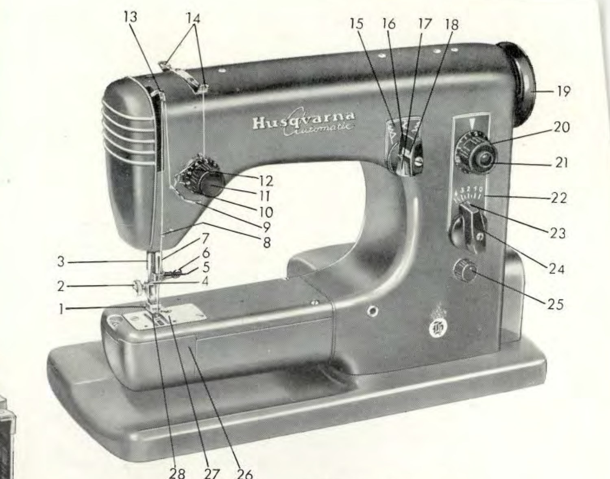
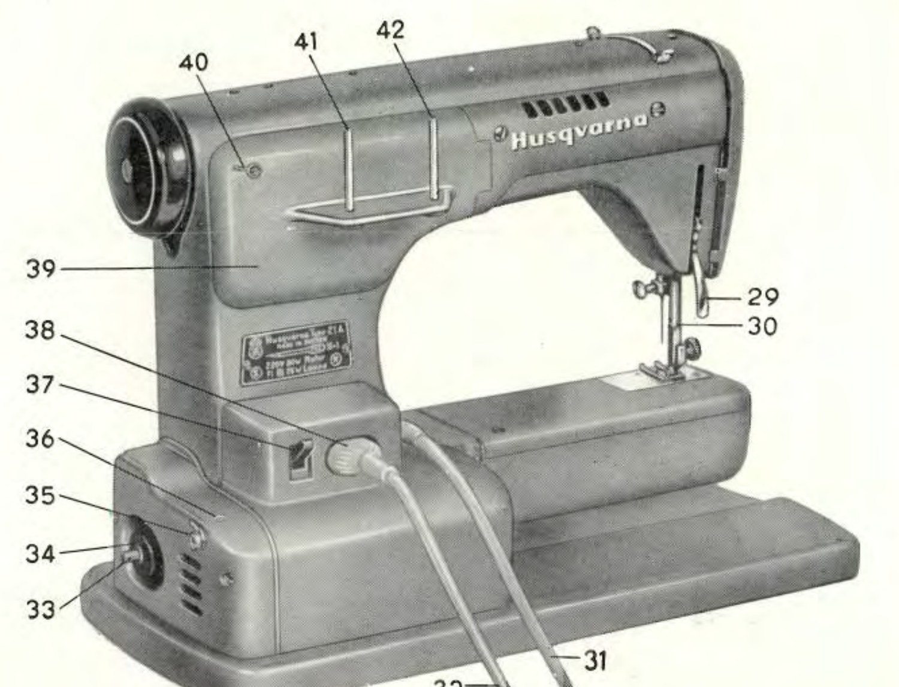
The machine sews with standard flat-shank needles, System 705 (15×1). The number is also engraved on the plate at the rear of the machine. Check that the voltage on the motor plate matches your supply before connecting the foot control.
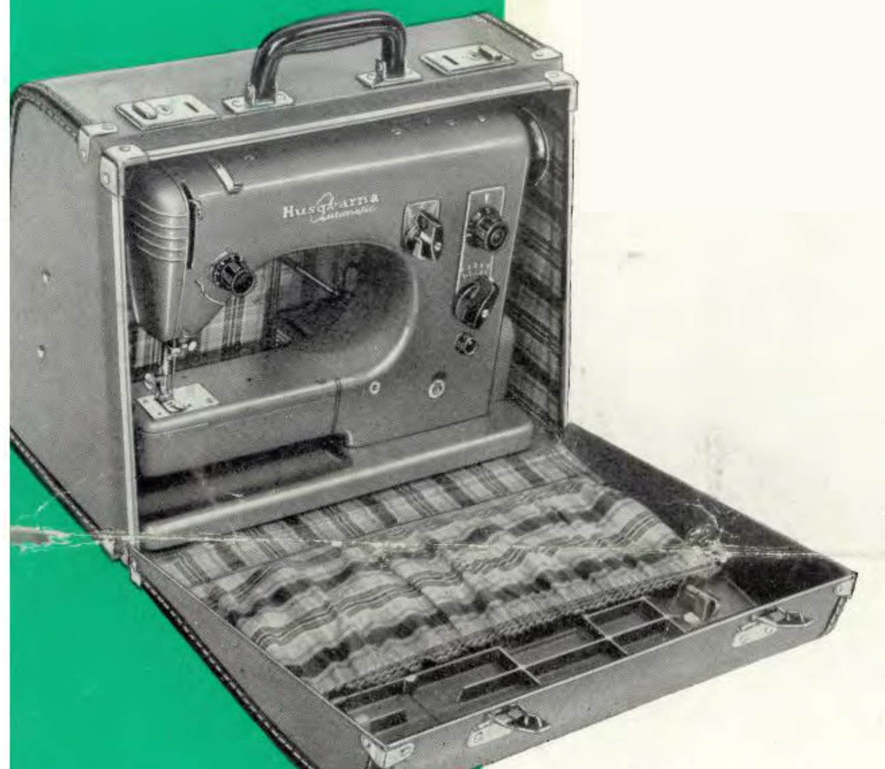
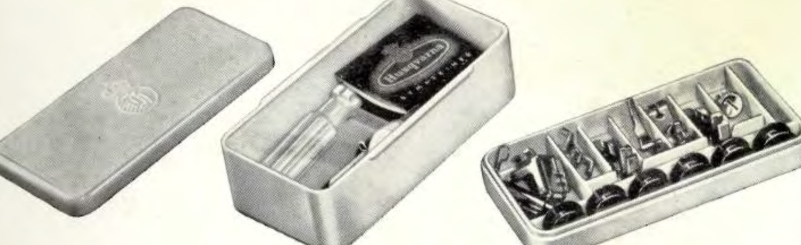
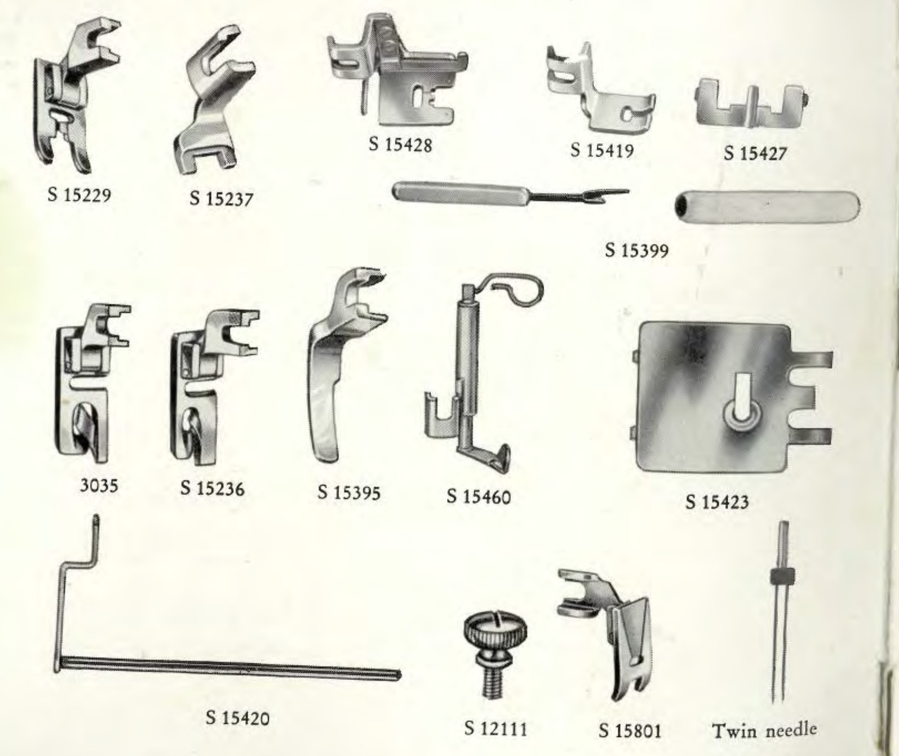
This manual has been prepared to help you learn to use your new Husqvarna Automatic in such a way that you will get the very best out of it — to enable you to take full advantage of all the machine’s special features which put skill into your fingers and make sewing fun.
Maybe you are thoroughly accustomed to sewing by machine and feel you can skip reading these instructions. Our advice is: Don’t. We can say with fair certainty that you will find quite a number of ideas here that you hadn’t thought of before, as well as simple sewing tricks that you had forgotten.
Have the machine in front of you as you read, and try out the various operations. Even if you have had some previous instruction in the use of your Husqvarna Automatic, this is probably the first time you have been alone with it — so here is a splendid opportunity to get acquainted. You’ll find it well worth while, too. For this machine can be used for all kinds of sewing operations — sewing the most beautiful straight seams, doing ordinary zigzag stitching, and producing without any trouble at all an amazing variety of automatic embroidery patterns.
Even after you have acquired the general technique of sewing on the Husqvarna Automatic, you will probably want to consult the manual from time to time in regard to details. So keep this booklet always at hand — preferably in the case with the machine.
Good luck — and good sewing with your Husqvarna Automatic!
Unless a contrasting effect is desired, the stitching should match the fabric as closely as possible. It is therefore important to select a needle and thread suited to the material which is being sewn. The table below will help you to do this.
Needle System 705 (15×1) is the one used for the Husqvarna Automatic. In case you forget the number, it is engraved on a plate attached to the rear of the machine.
| Grades | Sizes | Types of fabric and work | Cotton | Silk | Linen |
|---|---|---|---|---|---|
| Fine | 60 | Delicate fabrics like georgette, chiffon, batiste, fine lace, fine linen and other sheer fabrics. For fine lingerie, infants’ clothes and fine lace work. | 100 to 150 | 00 and 000 twist | |
| Medium-fine | 70 | Medium light-weight and summertime fabrics. For house dresses, children’s dresses, cottons, aprons, curtains. | 80 to 100 | 0 twist | |
| Medium | 80 | Dress silks and cottons, light weight to woollens and decorators’ fabrics. For dressmaking and general household sewing, men’s dress shirts and light weight draperies. | 60 to 80 | A & B twist | |
| Light-heavy | 90 | Heavy cretonne, madras, muslin, brocades and quilts. For men’s work shirts and other work clothes, heavy quilting and decorators’ articles. | 40 to 60 | C twist | |
| Medium-heavy | 100, 110 | Heavy woollens and suiting, light-weight canvas, bed ticking, upholstery and awning materials, slipcover fabrics. For men’s suits, work and sports clothes, awnings, slipcovers, upholstery and mattresses. | 30 to 40 | D twist | |
| Heavy | 120 | Heavy overcoating, duck, ticking, drills, canvas and sacking. For heavy washable uniforms, bedding for hospitals, hotels and camps. Extra heavy and coarse goods. | 24 to 30 | E twist | 60 to 80 |
| Extra-heavy | 130 | For canvas bags and heavy canvas products. | 20 to 24 | 40 to 60 |
Loosen the needle screw (A, Fig. 3). Insert the needle in the clamp (B) and push it up as far as it will go. See that the flat side of the needle is turned away from you. Tighten the screw securely, and check again to make sure that the needle is correctly inserted. The long groove over the needle’s eye should be facing you.
When using a twin or triple needle, insert in the same way.
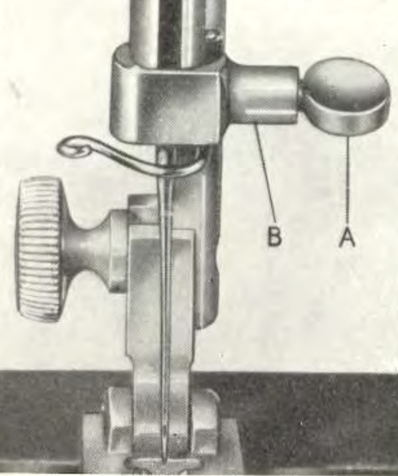
Turn the hand wheel (19, Fig. 1) towards you until the needle is in its highest position. Open the shuttle access door (26, Fig. 1).
Take hold of the bobbin case with the thumb and forefinger (Fig. 4), so that the latch (A, Fig. 5) is depressed, and lift the case out.
As long as the latch is depressed, the bobbin is held in its case. To remove the bobbin, release the latch and turn the case downwards. The bobbin then falls out.
Place a spool of thread on the spool pin nearest the hand wheel. Run the thread through the thread guide (A, Fig. 6) and down under the guide (B) on the tension device and back between the tension discs (C).
Wind the thread two or three times around the bobbin (D), and push the bobbin as far as it will go onto the winder spindle. This automatically disengages the sewing mechanism.
Start the bobbin winder by pressing the foot pedal, and wind at a moderate speed. Stop winding when the bobbin is filled to about 1/16 in. from the rim.
The spindle automatically engages the sewing mechanism again, when the bobbin is pulled off.
If you find the machine is winding unevenly as in (I), loosen the screw (36, Fig. 2) and move the tension device slightly inwards toward the machine. Tighten the screw and test to see if the winding is now even. If the machine winds unevenly in the other direction, as in (II), move the tension device outwards, to the right. A correctly wound bobbin should look like (III) — somewhat higher in the middle.
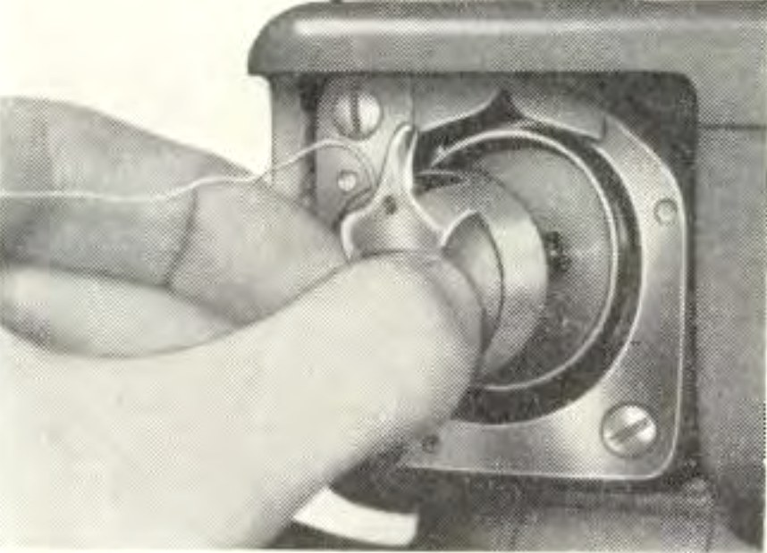
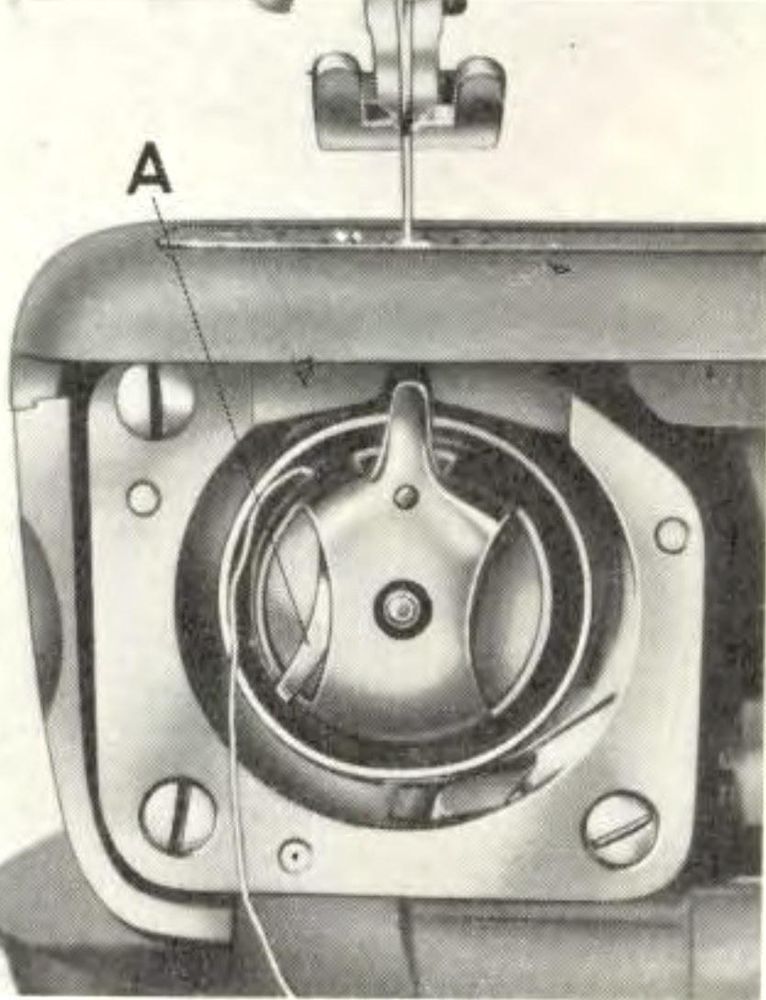
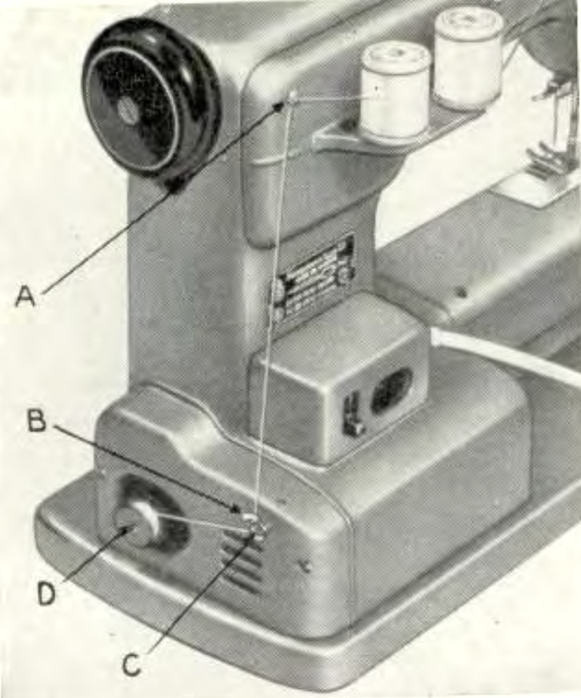
Hold the bobbin case in your left hand with the slot in the edge upwards or facing you (Fig. 7). Take the bobbin in your right hand, so that the thread end leads away from you, and drop it into the case. Then, still with your right hand, draw the thread into the slot in the edge of the case (Fig. 8).
Now lead the thread under the tension spring and let it come out at the notch in the end of the spring (Fig. 9). Pull the thread out a few inches, and check to see that the bobbin rotates clockwise in the case.
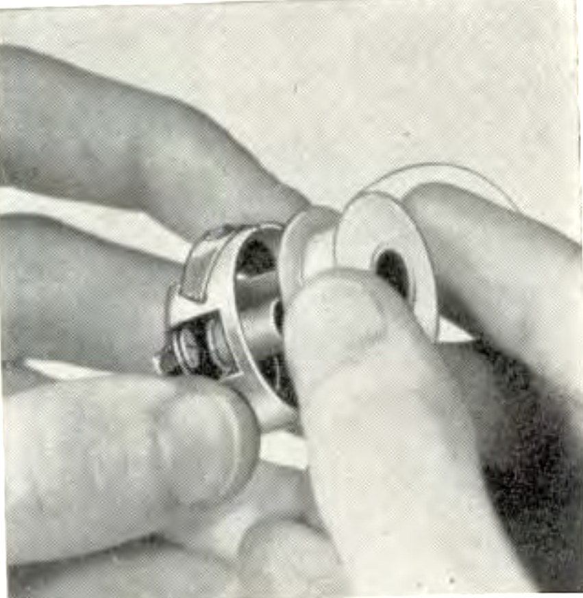
The machine comes from the factory with the lower thread tension adjusted for normal use. Do not alter the tension unless it is absolutely necessary — as for example, when sewing very loosely or tightly woven fabrics, or when doing special jobs, such as sewing buttonholes, eyelets, etc. To adjust the lower thread tension, use the small screwdriver which you will find in the attachment box. Take out the bobbin case and turn the spring screw (Fig. 10) to the right to increase the tension or to the left to decrease it.
Do not turn the spring screw more than 1/8 of a turn without testing to see if the adjustment is sufficient.
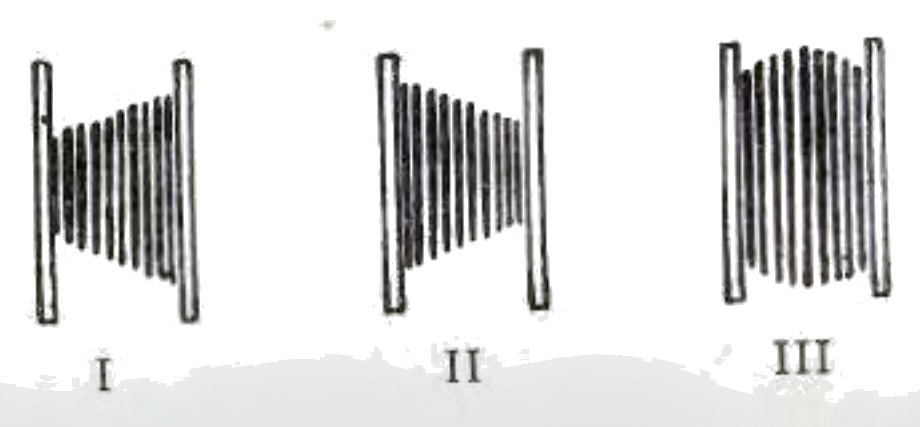
Turn the hand wheel (19, Fig. 1) towards you until the needle is in its highest position. Open the access door (26, Fig. 1) and pick up the bobbin case with the thumb and forefinger, gripping the latch (A, Fig. 5) firmly so the bobbin does not fall out.
Push the bobbin case onto the centre post of the shuttle (A, Fig. 11), with its projection upwards so as to fit the notch (B) in the shuttle race. Press the case firmly into place.
Leave the thread end hanging down from the bobbin case, and close the access door.
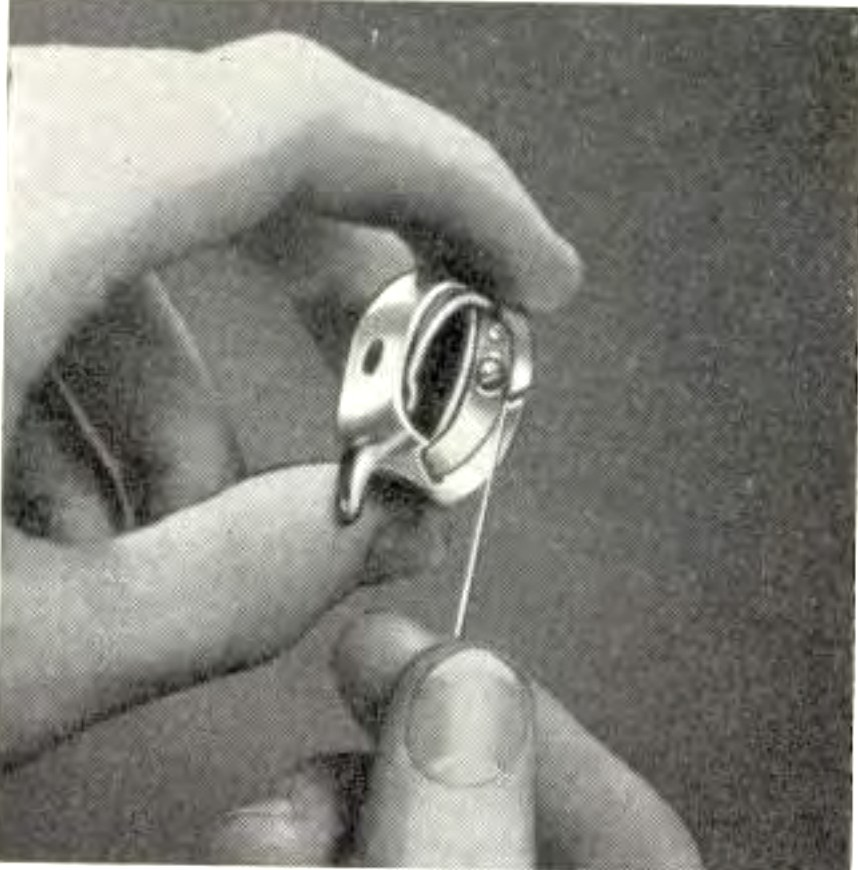
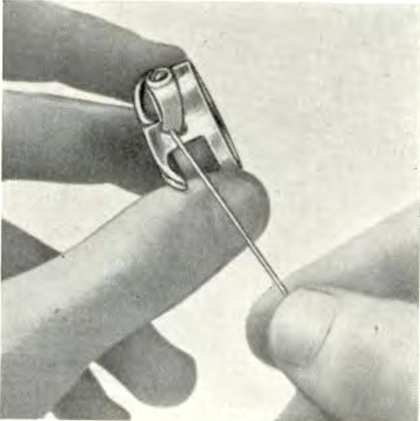
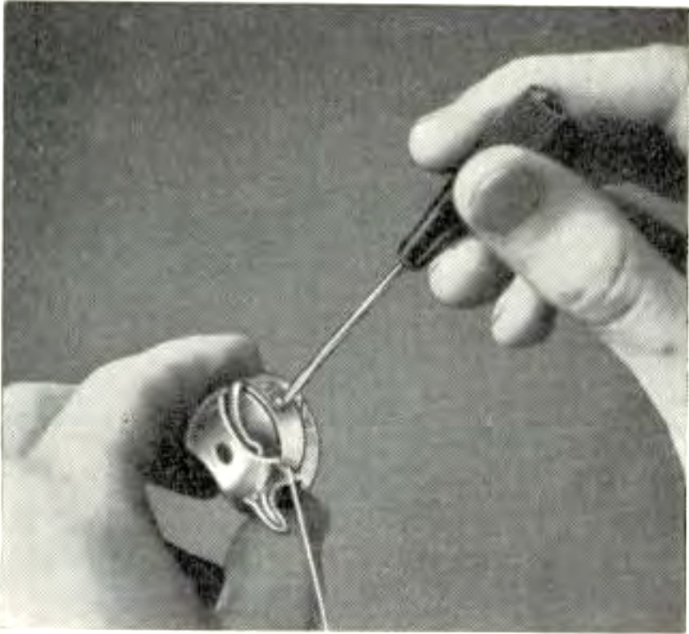
Bring the thread take-up lever (6, Fig. 12) to its highest position by turning the hand wheel towards you. Put a spool of thread on one of the spool pins (41 and 42, Fig. 2).
Pass thread through the thread guides (1 and 2, Fig. 12), then round from right to left between the innermost tension discs (3), over the crotch of the thread take-up spring (4), under the slack thread regulator (5) and up through one of the eyes in the thread take-up lever (6). From the take-up lever take the thread down through thread guide (7) and the guide on the needle clamp (8) and thread it through the needle from the front through the needle point, pulling out 3 or 4 inches behind.
To sew with thin or triple needles, you thread the machine with two or three threads in the same way as with one, except that the threads are passed between separate pairs of tension discs and through separate holes in the take-up lever (6).
Once the machine is threaded, be careful not to run it unless there is some fabric between the presser foot and the throat plate.
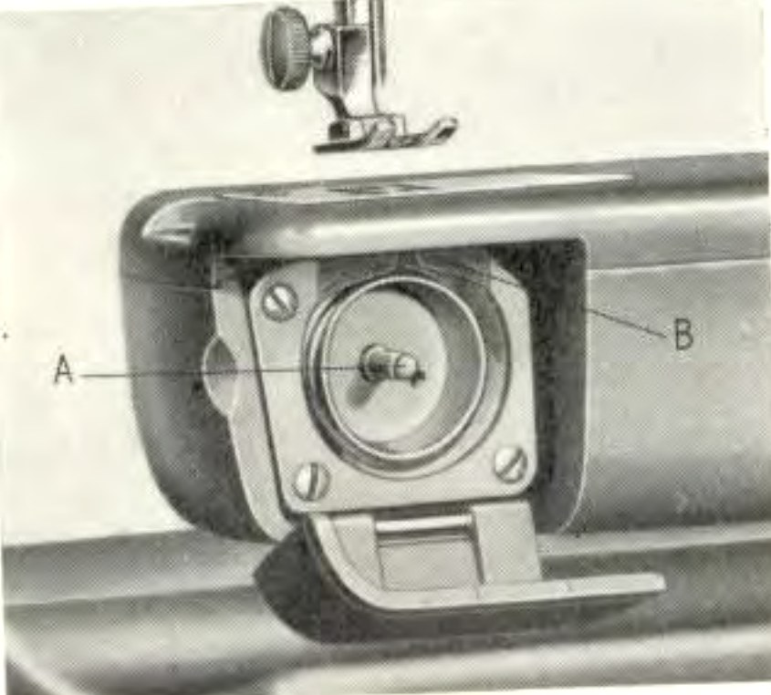
The tension of the upper thread is regulated by the pressure of the tension discs (3, Fig. 12) against each other. This pressure is adjusted by means of a knob calibrated from 0 to 9 with 0 as lowest and 9 as highest thread tension (Fig. 13). When the machine leaves the factory, it is adjusted for linen-sewing with mercerized thread No. 50.
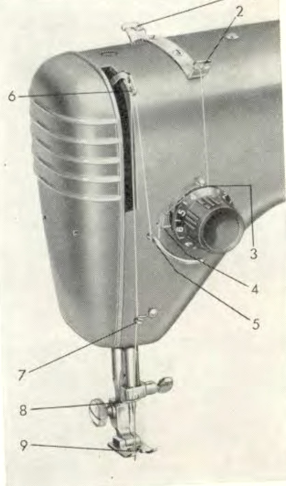
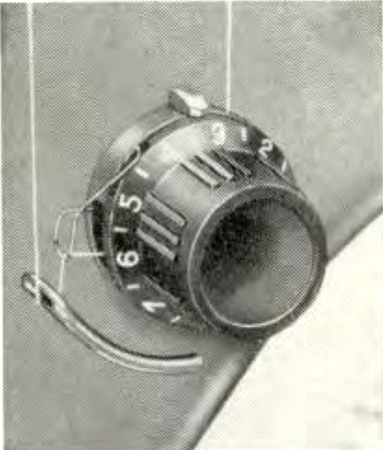
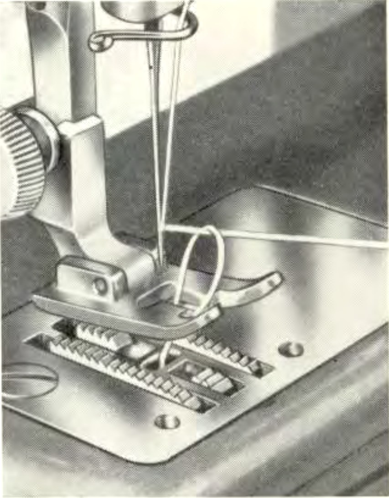
After the upper thread has been threaded through the needle, hold the end loosely in your left hand, and with your right hand turn the balance wheel slowly towards you so that the needle goes down and comes up again to its highest position.
Now pull the upper thread, and the lower thread will come up through the hole in the throat plate (Fig. 14).
When the tension of the upper and lower threads is correctly regulated, the stitches look alike on both sides of the material. The tieing up then occurs in the middle of the layer of the material.
Upper thread is stretched out along the top of the material, while the lower thread is pulled up in small loops. (This will also happen if the tension of the lower thread is too light, but always try to correct by adjusting the upper thread tension.) Loosen the upper thread tension by turning the knob to a lower figure.
Lower thread is stretched along the underside of the material, and the upper thread pulled down in loops. (Again, this will happen with too tight a tension on the lower thread, but before adjusting the lower thread tension, try adjusting the tension of the upper thread.) Increase the upper thread tension by turning the knob to a higher figure.
If the pressure on the presser foot is insufficient, increase it by turning the regulating screw (A, Fig. 64) to the right; if the pressure is too great turn the screw to the left.
When darning, embroidering, sewing on buttons, etc., you want the fabric to be free so you can move it by hand in any desired direction. This is made possible by lowering the feed dog (28, Fig. 1).
To lower the feed dog, turn the knob (25, Fig. 1) half a turn to the right — so the mark on it points downwards.
When you want the feed mechanism to function again, simply turn the feed-drop knob to the left so that the mark comes uppermost.
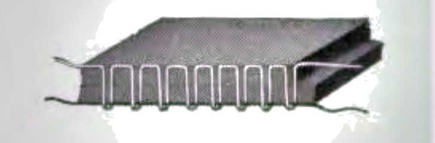
The Husqvarna Automatic does straight sewing and ordinary zigzag stitching and — in addition — embroiders repeating zigzag patterns automatically. Each of these three sewing techniques will be dealt with in turn.
When all is said and done, straight stitching remains the most important function of a sewing machine. With its jam-proof shuttle, the Husqvarna Automatic produces an excellent straight stitch. This shuttle is designed so as to release exactly the same length of thread at each revolution — no matter how fast the machine is run. A further advantage is that the zigzag mechanism is completely disengaged when the machine is doing straight stitching.
Now, if you have selected the right needle and thread, and have checked the thread tension, we are ready to start sewing.
The machine sews straight when the zigzag width control (24, Fig. 1) is set at 0.
Place the fabric under the presser foot and lower the presser bar. Place the motor foot control for greatest comfort and start the machine by depressing it gently. Remember that with the Husqvarna Automatic you have no need to manipulate the hand wheel to help the machine get started or slow it down. The foot control ensures smooth starts and accurate stopping — thus leaving both hands free for sewing.
Mind you, start the seam in the fabric, not outside.
When you have got the seam started, the machine speed can be increased as desired. Regulate the sewing speed by means of the foot control only — and never try to alter the rate of feed by manipulating the fabric. If you try to pull the fabric forward or hold it back, you may easily bend or break a needle, and you may even damage other moving parts of the machine.
To turn a corner, stop the machine with the needle in the fabric, raise the presser foot and rotate the fabric around the needle until it is in position for the new seam. Then lower the presser foot and continue sewing.
You can obtain different lengths of stitch by turning the stitch length knob (Fig. 15). The knob is graduated from 0 to 4, each of these units representing one millimetre. (N.B. 1 mm is approx. 1/25 inch.) To facilitate accurate sewing of buttonholes and decorative stitching, the knob has an even finer graduation between 0 and 0.5, each mark representing one-tenth of a millimetre, or about 1/250 inch.
When you want to sew backwards, for instance at locking seams, press in the knob (A, Fig. 15). The machine moves the fabric backwards with unaltered stitch length, as long as the knob is pressed in.
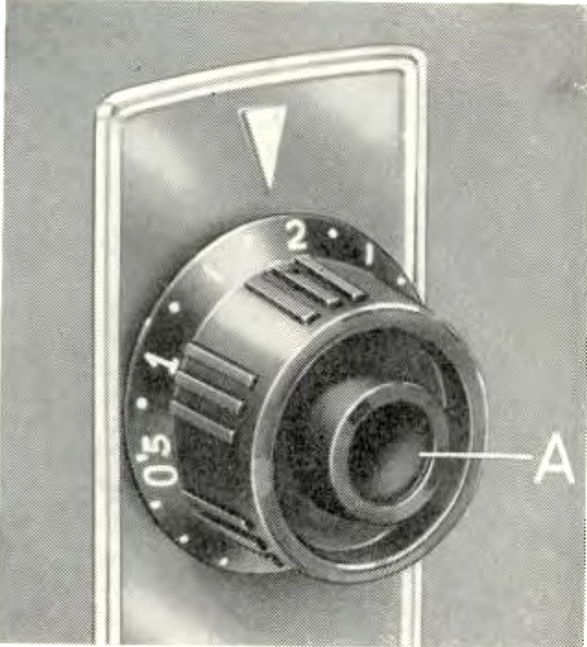
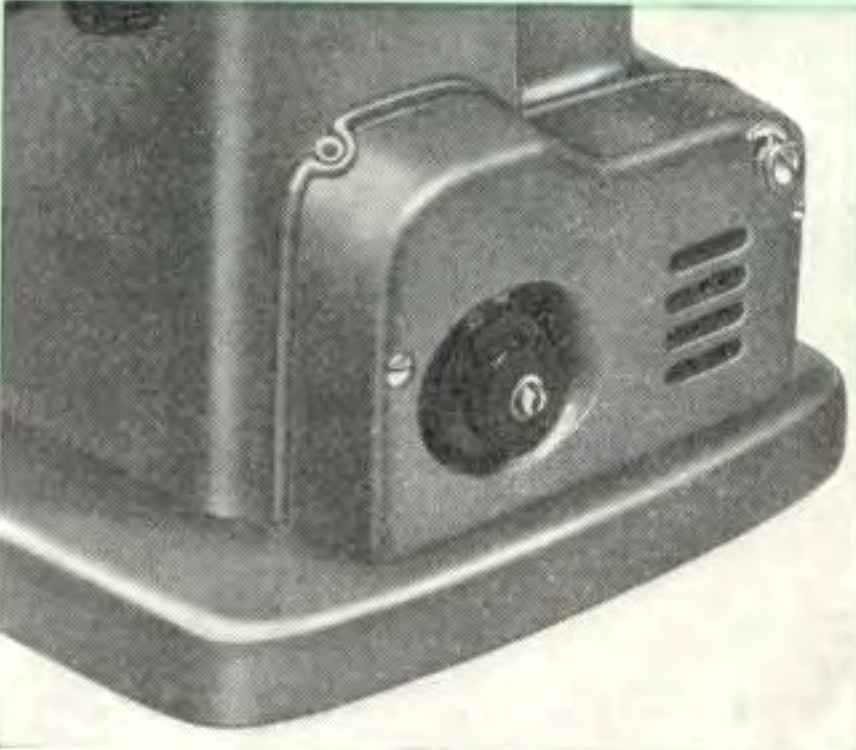
You will find the special speed control invaluable when you want to sew particularly slowly — for instance, when doing careful work or embroidering. The reduction gear is engaged by pulling out the knob (Fig. 16) as far as it will go. This causes the machine to sew at about one-fifth its normal speed.
The speed reducer enables you to sew extremely slowly, stitch by stitch, and thus gives you complete control.
Push the knob in, and the machine again sews at normal speed.
After stopping the machine, turn the hand wheel towards you until the needle is in its highest position. Raise the presser bar lifter (29, Fig. 2) and draw the work out backwards — away from you. Pull out the thread 4–5 inches, and cut it off against the thread cutter at the back of the presser bar (30, Fig. 2).
To facilitate the sewing of flat work, the extension plate can be installed on the machine. To secure this extension plate, slip the open end into the free arm as shown in Fig. 16a. Guide fork (A) at the underside of the extension plate into pin (B) projecting from the rear of the free arm. At the same time pull bolt (C) on the underside of the extension plate near its right end and permit it to enter its seat hole (D) in the side of the arm. Finally swing the supporting leg downwards from the left end of the extension plate. If necessary, screw in or out its ball-shaped bottom in order to obtain the required support and also for the purpose of levelling the extension plate.
Even those who are used to sewing on a machine sometimes have difficulty in running a straight seam. This difficulty can be overcome simply and easily, by learning to use the presser foot as a guide — or by using the practical edge guide.
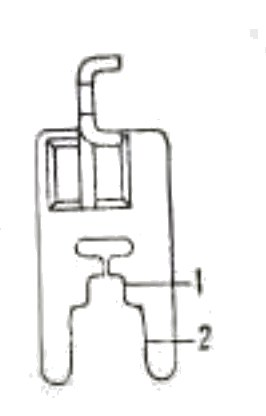
You can use the edge of the presser foot as a guide by letting the edge of the fabric (or a previous seam) run past it. Alternatively, let the edge of the cloth or a row of stitching pass at a certain distance from the steps in the presser foot or from its edges.
The distance from the needle to the outer edges of the presser foot is 9/32 in. (7 mm). If you let the edge of the material run along the edge of the presser foot, the stitching will of course also be 9/32 in. (7 mm) from the edge. But if you guide the fabric by the first step in the presser foot, you get a distance of only 5/64 in. (2 mm), which is suitable for stitched edges, raised seams, etc. From the second step in the presser foot to the needle is 5/32 in. (4 mm).
You can also guide the edge of the fabric or the stitching directly under the centre line of the right-hand toe of the presser foot, or at a certain distance from the centre line. This leaves a suitable space for gathering. Whatever you use as a guide, though, the main thing is to keep the same distance all along the row.
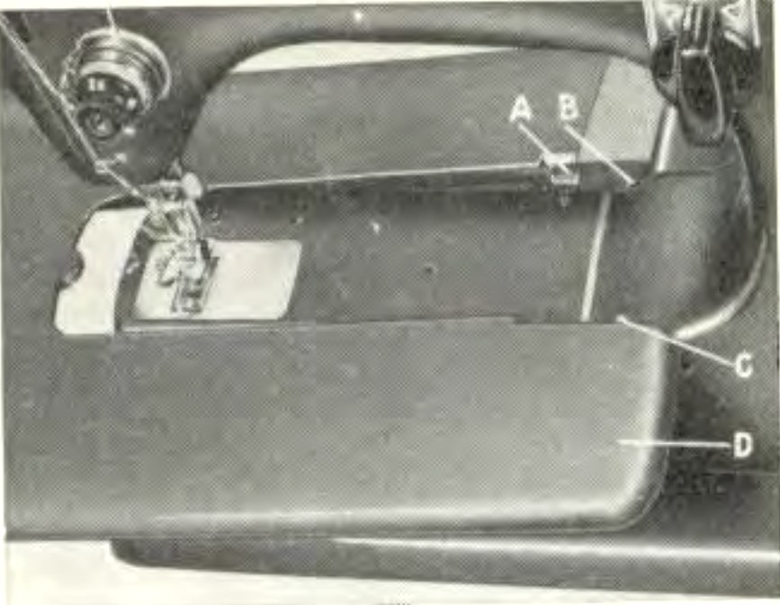
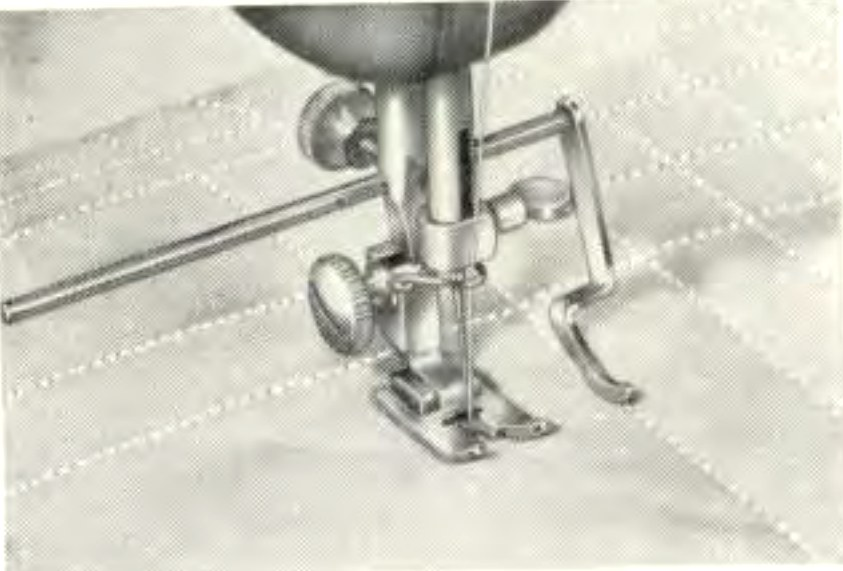
You attach the edge guide (Fig. 17) by sliding it from left to right into the hole in the presser bar. Set it at the desired distance from the needle and fix it there by screwing the attachment screw into the hole in the back of the presser bar.
Use markings to guide you when sewing the first seam. To sew parallel rows of stitching, move the work to the right so that the row already sewn comes under the guide.
You will find quilting, as well as marking, quite easy when you use this guide.
The important thing when sewing tucks or stitching edges is that the tucks should be of even depth all along their length, and that the stitching is parallel to the edge of the fabric. This is where you can make use of the presser foot or the edge guide. Mark the distance between the folds of the tuck by machine stitching without thread, then fold the cloth along the markings. Guide the folded edge by the presser foot or the guide attachment.
Avoid unnecessary hand work by using the machine as much as possible. You have the machine out anyway, so you might as well take advantage of it. Basting is done with long stitches and light upper thread tension so that the threads can easily be pulled out.
To mark by machine, lower the feed dog so you can move the work about in any direction you like. Light tension of the thread should be employed.
Among the attachments are hemmer feet for two widths of hem. To sew the hem shown in Fig. 21, use hemmer foot No. 3035.
Remove the presser foot and attach the hemmer. Clip off 1/8 in. (3 mm) or so from the corner of the fabric where the hem starts, and fold over the edge for about 1/2 in. (13 mm) to a depth suited to the cloth and the hemmer foot. Sew a single stitch where the hem starts. Then holding the threads firmly with your right hand, lift the hemmer foot slightly in order to get the folded edge into the scroll more easily. Once started, the hemmer folds the fabric automatically — you just have to make sure that not too much cloth (particularly from a hard multiple-layer hem) gets into the scroll.
To produce an extra-narrow hem, use hemmer foot No. 3002 and sew as above.
The hemmer feet can also be used for felling. Place the pieces of cloth one on top of the other with the edge of the bottom piece sticking out slightly — just enough to enable the lower edge to be felled easily without folding. When stitching the two pieces together, see that their edges are the same distance apart all the way (Fig. 22).
After sewing together, spread out the work so that the hem stands up. Then insert the hem in the hemmer and run the second seam (Fig. 23).
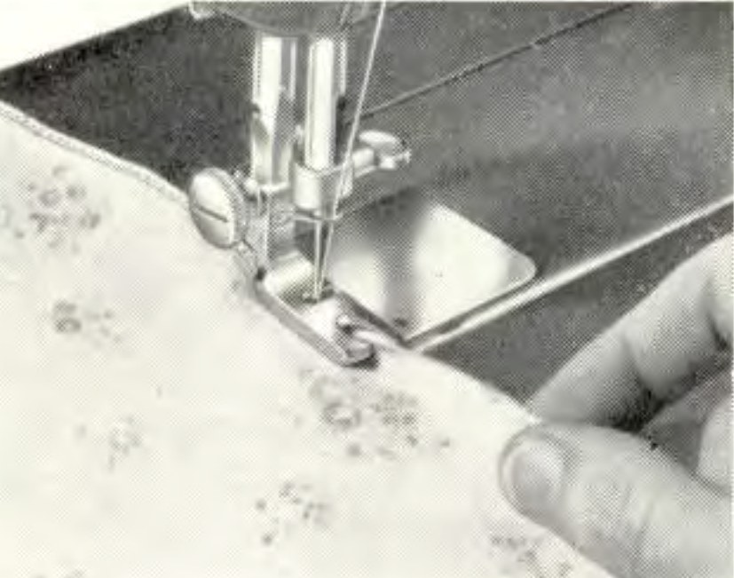
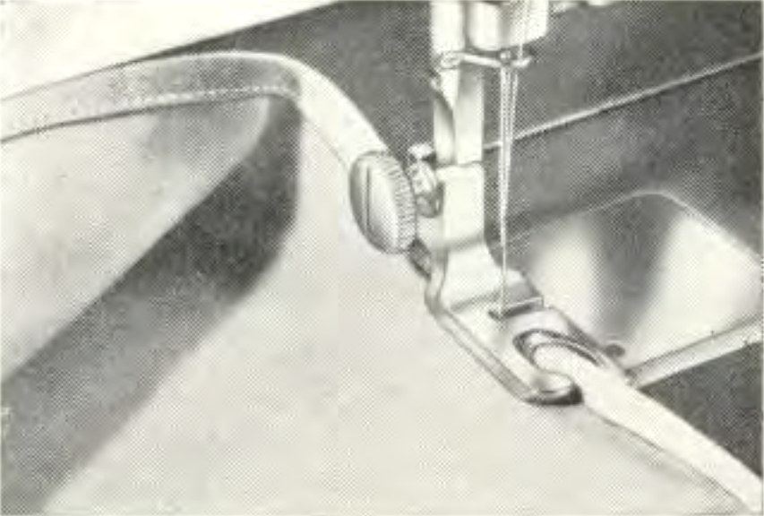
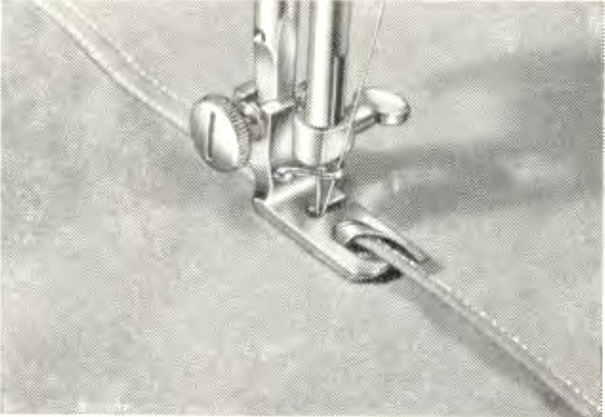
Baste together the opening with long stitches and the upper thread lightly tensioned. Leave about 3/4 in. (19 mm) open at the end. Force the seam apart and baste in the zipper by hand on the underside.
Change to the special presser foot for attaching zip fasteners (Fig. 18).
Open the zipper about 3/4 in. (19 mm) and start stitching down the left side of the opening (with the work right side out). Stitch a bit, then leaving the needle in the fabric, raise the presser foot. Close the zipper and continue stitching round it. Finish off by opening the fastener slightly as before. Remove the basting.
Baste the fly along the edge with long stitches and lightly tensioned upper thread. Then make a fold in the lower piece of cloth, about 1/16 in. (1.5 mm) from the basting stitches, and stitch the zipper to it, beginning at the bottom and running the zipper foot closely along its right side. Open the zipper as above to finish off. Turn the garment around, and with the right side of the cloth still uppermost, stitch the other side of the zipper from the top downwards.
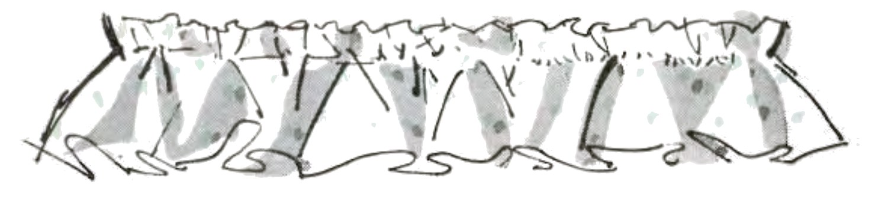
You can use the Husqvarna Automatic for gathering, in several ways.
Use the jointed presser foot (S 15229, page 4) which is mounted on the machine on delivery. Stitches should be rather long, and the upper thread tension sufficiently light to enable the lower thread to be pulled. Sew as usual, but preferably stitch two rows, using the presser foot as a guide. Instructions on page 11 tell you how to do this. When both rows have been stitched, pull the lower thread so as to form gathers in the fabric (Fig. 19).
This is where the edge guide comes in useful. Set it so that you guide by the row adjacent to the one you are stitching.
By using Lastex thread you can make elastic gathers. Wind the elastic thread by hand on to the bobbin, and use ordinary thread for the upper thread. This kind of gathering is especially suitable for underwear, children’s clothes, beachwear, etc.
By using zigzag stitching, you can also gather over an elastic band. To do so, stretch the band while sewing; the fabric then gathers naturally (Fig. 20).
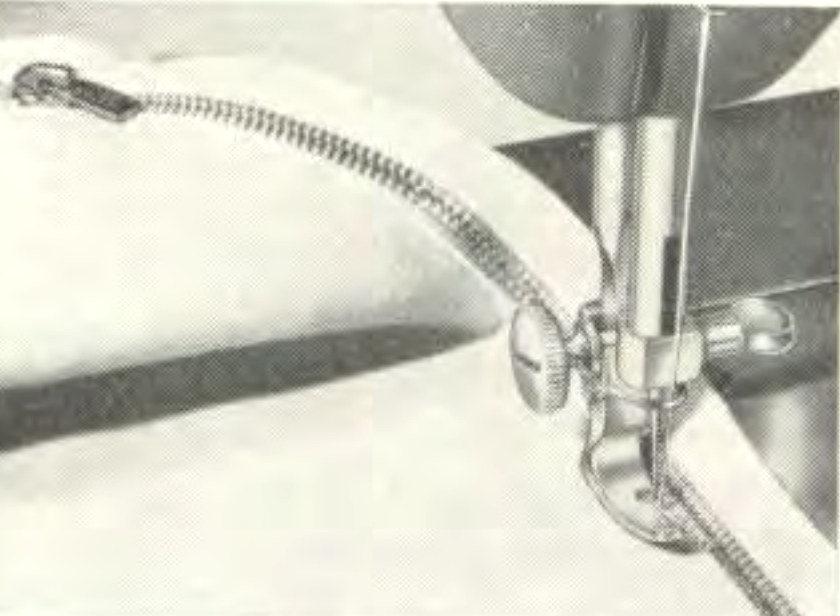
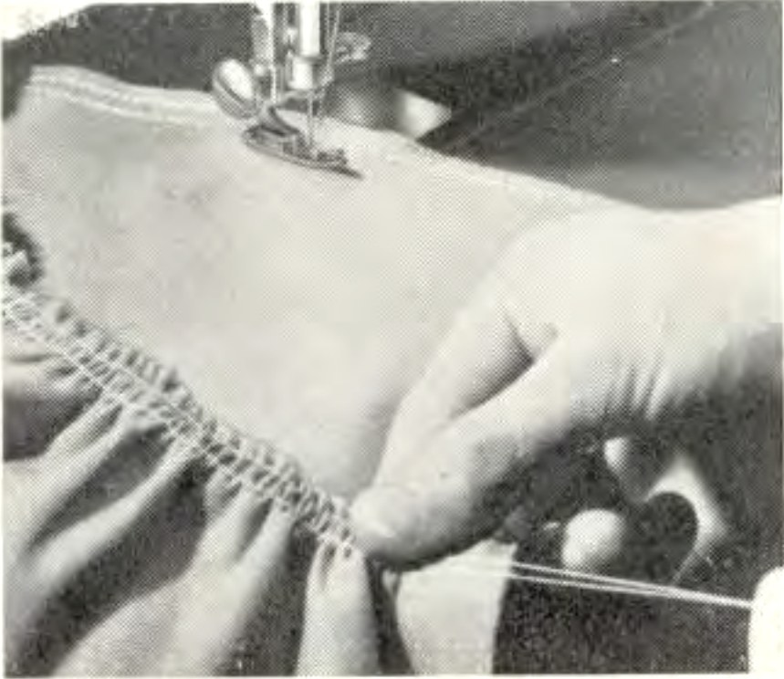
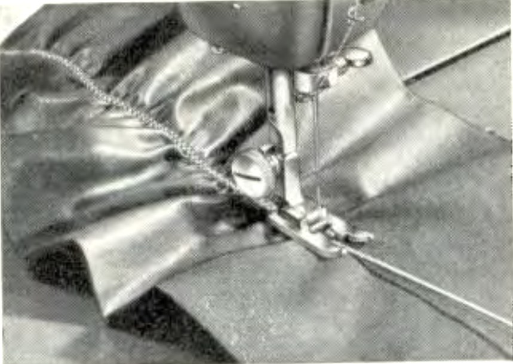
By making it possible to do hand finishing by machine, the Husqvarna Automatic has revolutionized home sewing. This machine turns out straight stitching and zigzag work with equal elegance — enabling you to sew complete garments by machine and thus avoid the wearisome hand work which was formerly necessary for finishing off.
Now we are going to show you how to do hand finishing by machine.
The machine is set for straight stitching when the zigzag width control (24, Fig. 1) is at 0. Settings 1 to 4 make it sew zigzag stitches of increasing width — up to 5/32 in. (4 mm).
On the knob for the needle starting positions (Fig. 24) there is a sliding control with a dial marked 1 to 5. This is the pattern selector for automatic zigzag work, about which there is more on page 20.
For all ordinary zigzag stitching the pattern selector should be set at 5 — no matter which cam set you have in the machine.
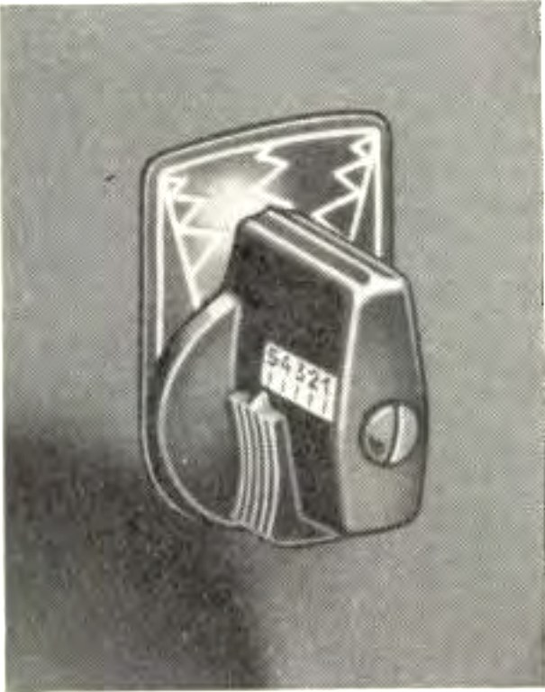
For most zigzag sewing the needle starting position knob is set in the middle position. With the knob set thus, the machine will sew zigzag stitches which extend equally on either side of the straight stitching line.
With the starting position knob turned to the left, zigzag stitches extending to the right of the straight stitching line are produced.
And if the knob is switched to the right, the zigzag stitches will, on the contrary, all go to the left of the straight stitching line.
While the machine is running, the zigzag width can be altered precisely as desired. But if you want to alter the bight when the machine is stopped, see that the needle is not in its down position in the fabric — otherwise you may end up with a bent or broken needle.
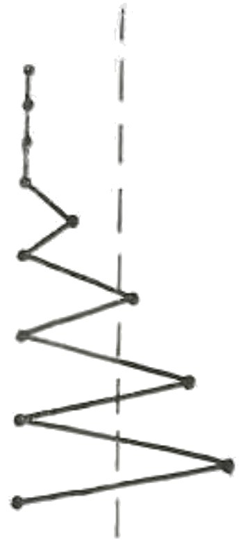
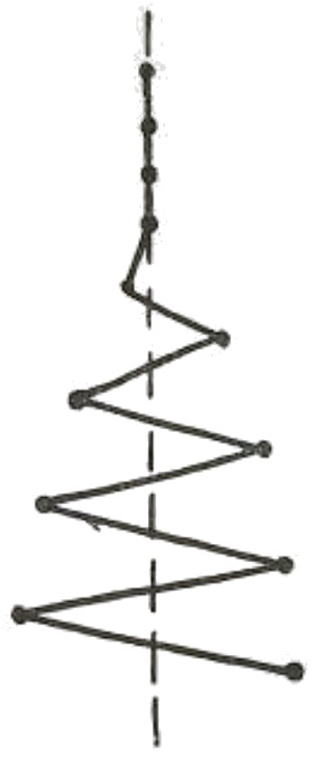
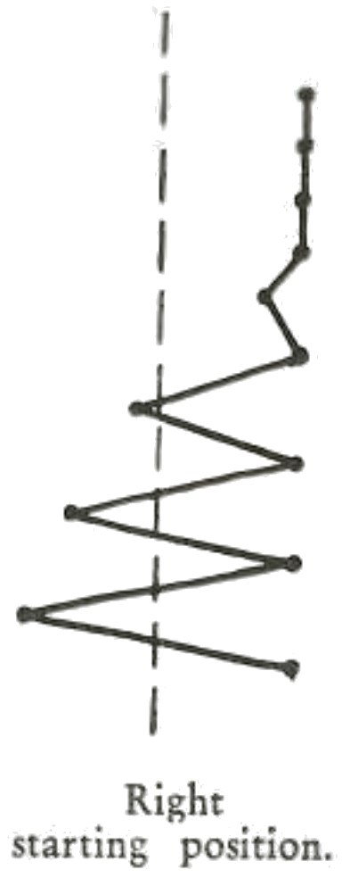
Machine overcasting done with the Husqvarna Automatic (Fig. 25) looks better and is actually stronger than when done by hand. You can do it so much quicker, too.
Use the regular presser foot and set the zigzag width control at 3 or 4. For the stitch length, a setting of 2 or 3 is usually about right. If the fabric is very loosely woven, however, you should increase both the bight setting and the stitch length to 3½ or 4. If in doubt, test the settings on an odd scrap of material before starting to sew.
The needle starting position knob should be set in the middle position.
Place the edge which is to be overcast under the presser foot so that the needle just clears the material with each right-hand stroke.
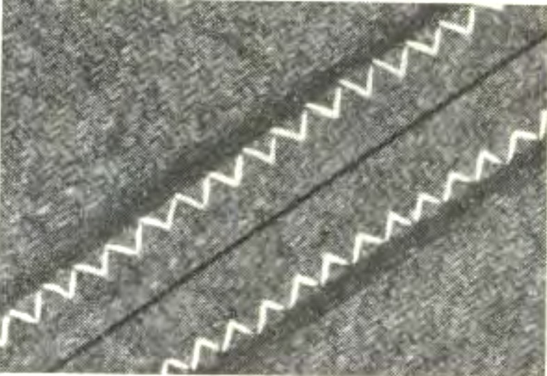
To sew rolled edges (Fig. 32), use the narrow hemmer foot (S 15236, page 4).
Set the width control at 3 and the stitch length at 2 and insert the edge of the fabric in the hemmer in the manner described for making narrow hems on page 12.
See that the stitch straddles the hem — in other words, the needle should enter alternately along the left and right edges. The tension of the upper thread should be rather tight.
Rolled edges look well on thin silk scarves, insertions, ruffles on curtains, etc. You can learn very quickly to sew the most beautiful rolled edges on the machine.
The most appropriate application for shell stitching (Fig. 33) is when hemming light, soft materials like tricot, crêpe de chine, etc. When thus used, it gives the impression of French hand hemming.
To do this you have to use the special hemmer foot, No. S 15240. Otherwise the procedure is the same as when sewing rolled edges, except that the settings for the zigzag width and the stitch length should both be increased to 4. Tension on the upper thread should be extra tight, so as to make each shell stand out prominently.
A picot edge is produced by sewing small zigzag stitches over a folded edge. This is an attractive way of finishing off ruffles, flounces, insertions, etc. (Fig. 35).
Whenever you want to prevent threads from unravelling — in tablecloths, place mats, scarves, etc. — fringe the edge with zigzag stitching. You can either do this with thread in the same colour as the material, or use a contrasting colour as a decorative effect (Fig. 36).
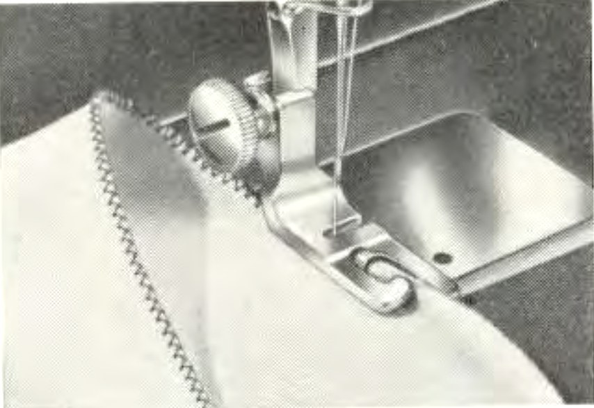
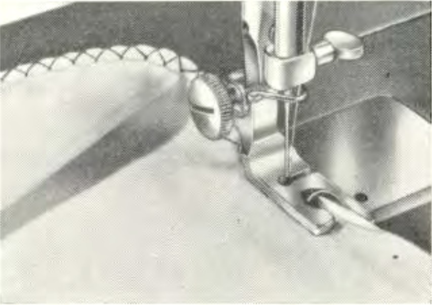
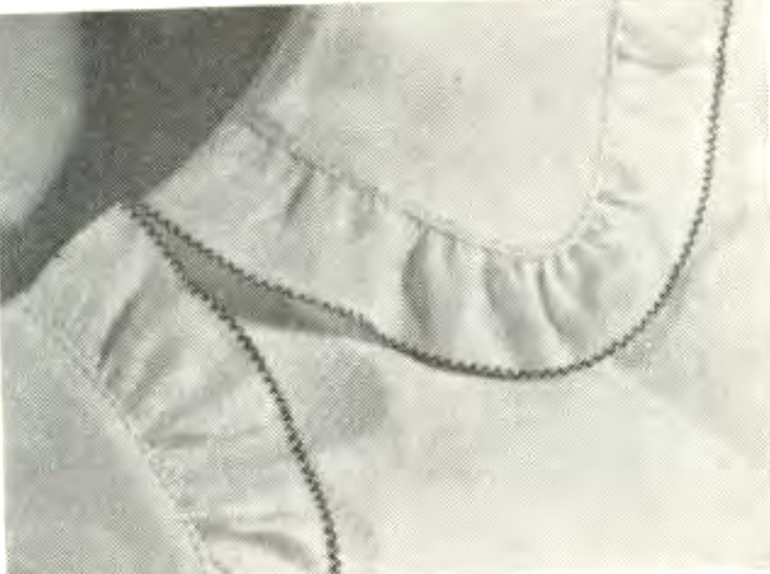
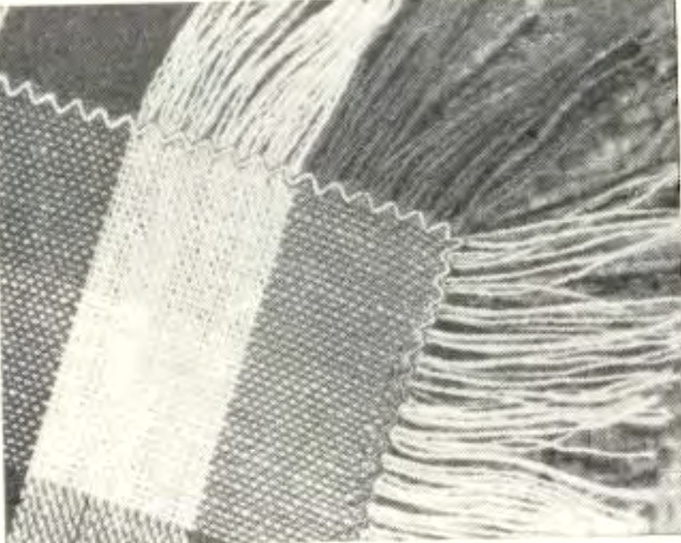
Set up the machine like this:
Then, to sew the buttonholes:
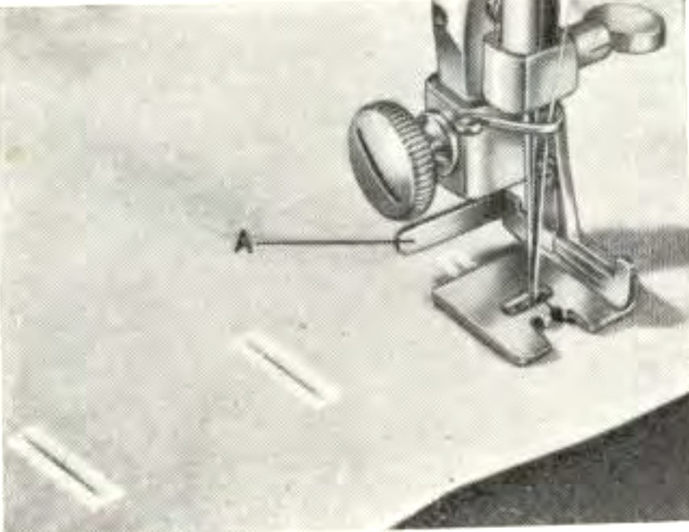
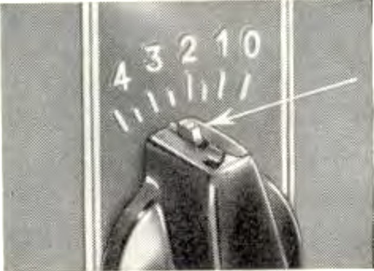
In soft woollens, and garments in which the buttonholes are particularly subject to wear, it may be wise to sew corded buttonholes (Fig. 28).
A corded buttonhole is made in exactly the same way as an ordinary buttonhole, except that a gimp is sewn in as well. It is best to start from within the garment and work toward the edge, so that the gimp goes round that end of the buttonhole which is most subject to stress.
Fit the button sewing foot (S 15237, page 4) on the presser bar and drop the feed dog by turning the knob (25, Fig. 1). Switch the needle position knob (16, Fig. 1) to the left starting position, and set the zigzag width control (24, Fig. 1) at 3.
Place the work under the button foot so that two of the holes in the button come under the needle opening in the foot. Slowly turn the handwheel to check whether the needle passes through the centre of each hole on its left and right-hand strokes. If necessary, move the button or alter the bight setting. Sew on the button with 5 or 6 stitches, and lock the threads by sewing a few stitches into the same hole, making sure the needle is up before you move the bight setting to 0. When attaching four-hole buttons, first sew two holes and then move the work to the next pair of holes (Fig. 29).
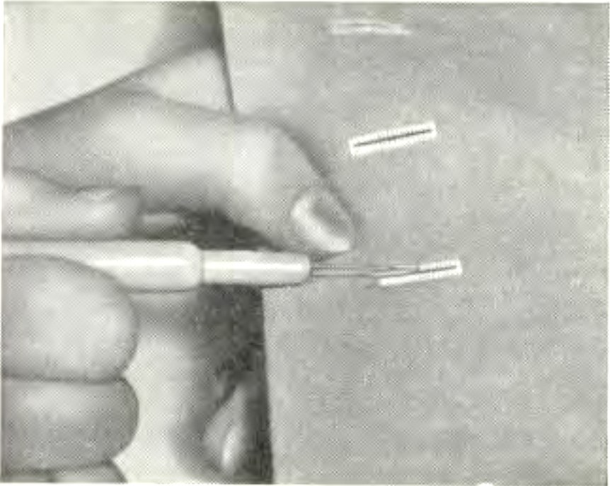
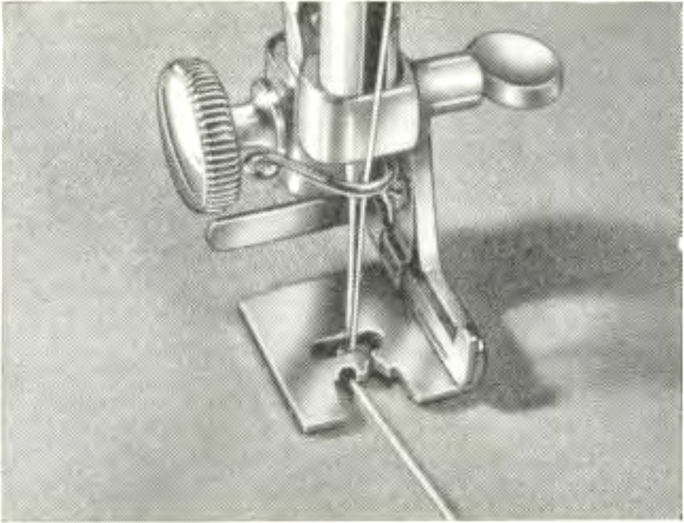
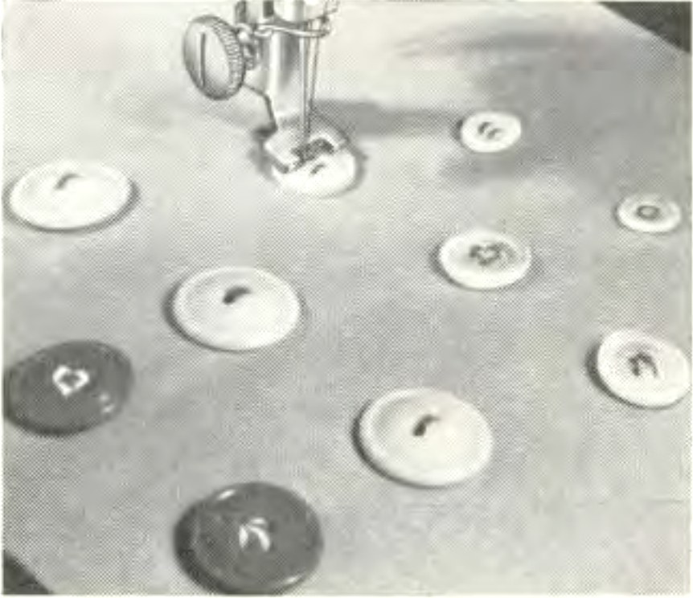
Fig. 30 shows how you can secure pocket openings by sewing bar tacks across the ends. The procedure is this:
Set the zigzag width control at 1½, and the stitch length almost at 0. Then sew bar tacks, about 1/4 in. (6 mm) long, across the seam at either end of the pocket.
Lock the threads by straight stitching a couple of times — with the width control at 0 and the feed dog lowered.
It is especially useful to be able to sew zigzag stitches when hemming garments of stretchable material, such as knitwear, tricot, etc.
You do this with the hemmer foot, in the same way as straight hemming (page 12), except that a zigzag stitch of suitable width is used (Fig. 31).
A decorative effect can be obtained, on children’s clothes, for instance, by sewing the hem with a thread of contrasting colour.
The hemstitcher (Part S 15367) produces a hemstitch-like effect through butt seaming the pieces of material and subsequent finishing, according to these instructions:
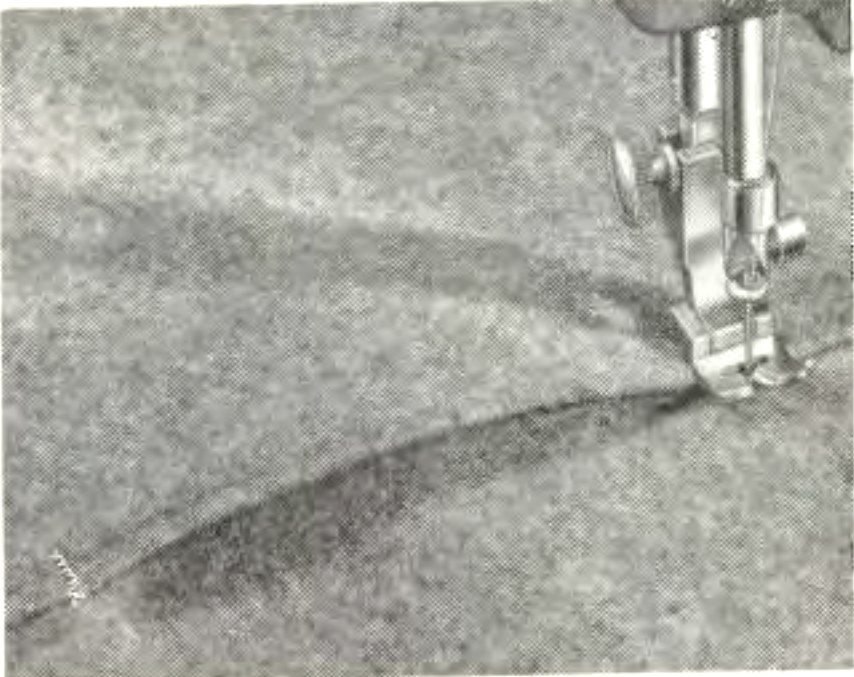
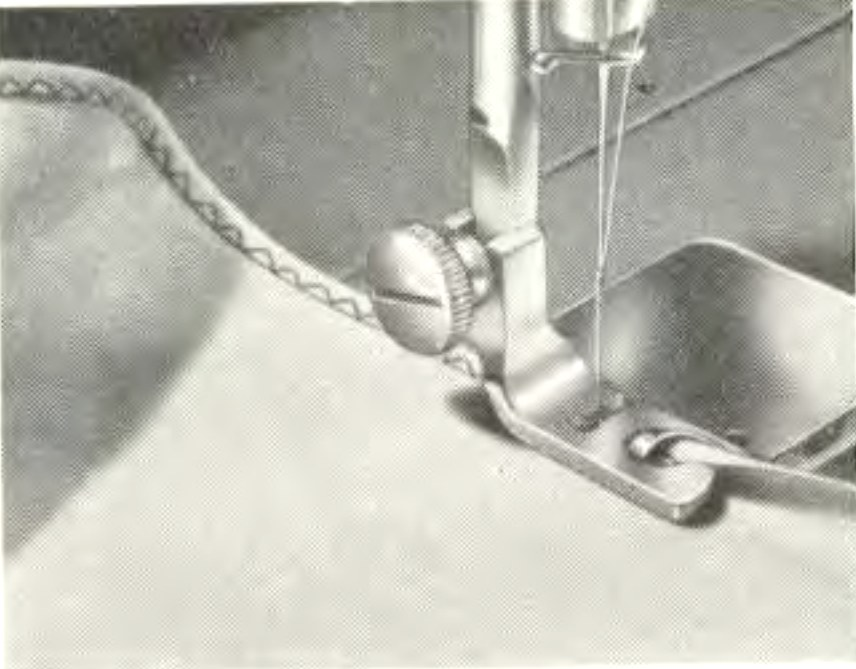
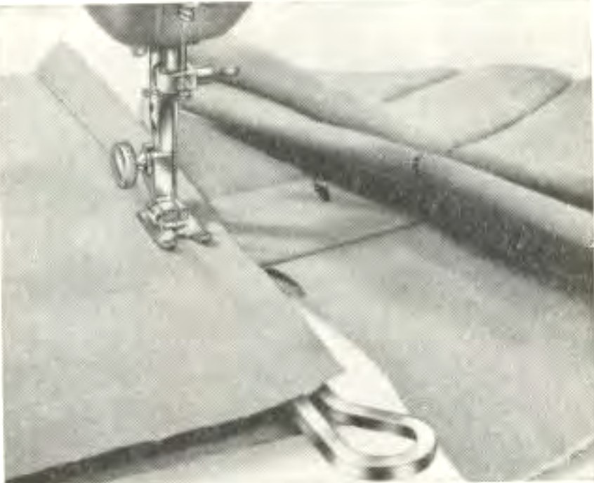
Perhaps you’ve just finished a dress and have only the hem left to complete. You think, maybe, that you ought to do this by hand so that it shows as little as possible? Well you don’t have to, you know! Use your Husqvarna Automatic. If you fit a special blindstitching attachment plate S 15818 (Fig. 34) and pattern cam set D, you can sew a hem which is almost completely invisible on the right side. Both these attachments are available, at extra cost. Do it like this:
The amazing variety of continuous embroidery patterns which the Husqvarna Automatic can turn out completely — automatically — means that you have here a creative tool, which enables you to do intricate work, whether you are skilled or not. It won’t take you long, either, to find applications for the skills the machine literally puts at your fingertips: Baby’s dress will be lovelier still with a pretty border on the collar and yoke … those place mats with decorative stitching will look as if they were hand embroidered.
By using the plastic pattern key that comes with each machine, you can easily get an idea of the patterns which can be sewn with one or two needles. At the same time, it will also give you information on how to set the controls for the stitch pattern you have chosen. You can produce many of your own variations on these basic patterns just by altering stitch lengths and stitch widths.
The stitch length on the pattern key refers to the twin needle with 5/64 in. (2 mm) needle distance which is supplied with the machine as standard.
To set the machine for the zigzag pattern you wish to sew, there is a numbered scale (A, Fig. 37) with a pointer (B, Fig. 37) on the left-hand side of the needle position knob. The numbers on the pattern key correspond to the numbers on this dial. If you want to do ordinary zigzag stitching — for overcasting edges, for instance — set the pattern selector at 5. This applies to whichever cam set you happen to have in the machine.
When the machine is sewing decorative stitches automatically, the movements of the needle are controlled by cams, which are built together in one solid piece to form a set. If you open the door at the back of the machine (39, Fig. 2) you will find a set installed. Use pattern presser foot S 15801 (page 4), except while doing pattern stitching in very thin material. In that case use the standard presser foot S 15229. The sets which come with the machine are marked A, B, C etc., and the various patterns they produce will be found on the colour plates on pages 21 and 22.
If you want further patterns, more pattern cam sets can be supplied at extra cost through your Husqvarna dealer. By altering the stitch length and the stitch width you can produce an infinite number of variations from these basic patterns. The plates also show decorative stitches made with twin needles; still further variations can be obtained by using different coloured threads.
Here follow some examples of effective patterns, sewn with one needle as well as two, together with some colourful suggestions for garments on which decorative pattern stitching has been conjured up with the greatest of ease on the Husqvarna Automatic.
Whether you have the machine set for plain zigzag stitching, with the pattern selector at 5, or for some decorative pattern, a cam will always be engaged. Before you move the selector to another number, be sure to turn the stitch width control (24, Fig. 1) to 0. But you need only do this if the machine is stopped — when it is running, you can switch from one pattern to another just by moving the pattern selector and without bothering about the width control.
Never start the machine unless you are sure a pattern cam set has been inserted!
The basic pattern of cam sets A, B and C can be varied by altering the settings of the stitch width and stitch length controls — see the pattern key on page 20.
| Pattern selector | 1 | 2 | 3 | 4 | 5 |
| Stitch width | 4 | 4 | 4 | 4 | 4 |
| Stitch length | 0.3 | 0.3 | 1 | 0.3 | 1.5 |
| Pattern selector | 1 | 2 | 3 | 4 | 5 |
| Stitch width | 4 | 4 | 4 | 4 | 4 |
| Stitch length | 1.5 | 0.3 | 0.3 | 0.3 | 1.5 |
| Pattern selector | 1 | 2 | 3 | 4 | 5 |
| Stitch width | 4 | 4 | 4 | 4 | 4 |
| Stitch length | 0.3 | 0.3 | 0.3 | 0.3 | 1.5 |
This beautiful type of embroidery looks much more difficult than it actually is. To do it you use the regular presser foot and set the stitch width at 4. Stretch the fabric over an embroidery hoop (Fig. 41).
Run the machine at high speed, moving the hoop with the fabric stretched over it backwards and forwards to make the embroidery pattern.
Feather stitching can also be done with a twin needle and threads of different colours — with striking decorative effect. Feather stitching is suitable for embroidering place mats, aprons, bed jackets, blouses, etc.
is another type of embroidery which is easily carried out (Fig. 42). Start by outlining the contour of the pattern with fine zigzag stitches. Then remove the presser foot, and, with the feed dog lowered, cover the areas which are to be filled in, with rows of extended stitches all going in the same direction. To do this you move the hoop with the work stretched on it backwards and forwards. The zigzag width control is set at 1.5. Embroidery done in this way can be very good looking — producing somewhat the effect of applique.
Remove the presser foot and lower the feed dog. Thread the machine with an embroidery thread intended for sewing machines (silk or mercerized thread). Stretch the fabric with the outline design over an embroidery hoop. First sew a stitch or two by turning the hand wheel to bring up the lower thread; then holding both the upper and lower threads lock them again by sewing a couple of stitches. Run around the contours of the design with fine stitches (Fig. 43).
Set the width control as you want it — either at 0 for straight stitching or 1 to 3 for zigzagging. Start filling in the design with rows of stitches by guiding the hoop slowly backwards and forwards under the needle. You will probably find it helpful to use the machine’s slow speed (see page 11). After an even padding has been obtained, finish off with long straight stitches exactly as in hand work.
With the aid of the eyelet embroidery attachment the Husqvarna Automatic permits the sewing of eyelets for embroidery, belts or lacing (Fig. 45).
Eyelets can be made on nearly all types of fabric, those tightly woven and not excessively heavy being preferable.
The thread for sewing eyelets should be selected corresponding to the kind of material used.
For sewing eyelets prepare machine and work as follows:
With twin and triple needles (Fig. 46) you can sew a great variety of fancy seams — gathered and raised — which can be most effective on dresses, blouses, tablecloths, place mats, curtains and so on.
A size 14 (90) twin needle, with a spread of 5/64 in., is provided with the machine. If you want needles with a different spread, you can obtain them from any Husqvarna dealer.
For heavier fabrics you need a greater distance between the needles to get the right effect.
Before actually sewing, it is best to experiment a little on a scrap piece of material to make sure you get seams of the desired breadth and width. The kind of seam produced depends largely on the material. Check also to see whether the weave permits sewing seams that cross each other — as not all fabrics allow this. With some materials it is impossible to sew a raised seam on the bias.
Use the regular presser foot and see that the needle starting control is in its centre position.
With the twin needle supplied with the machine you can do straight stitching and zigzag up to dial setting 3.
Make absolutely sure that the needles clear the opening in the presser foot. Otherwise you may find yourself with a broken needle.
If you want an even higher raised seam than you can obtain with the regular presser foot, use the special twin-needle foot (S 15419, page 4). This has three grooves for the raised seams to run in. You can sew both straight and curved seams with either presser foot (Fig. 47, 48).
When sewing with twin and triple needles the maximum zigzag width is automatically decreased, depending on the increased needle distance. It is important therefore that the following maximum widths are not exceeded, otherwise a broken needle may result.
| Twin | 1/16 in. (1.6 mm) | max. 1/8 in. (3 mm) |
| Twin | 5/64 in. (2 mm) | max. 3/32 in. (2.5 mm) |
| Twin | 1/8 in. (3 mm) | max. 1/16 in. (1.5 mm) |
| Twin | 5/32 in. (4 mm) | max. 0 |
| Triple | 3/32 in. (2.5 mm) | max. 5/64 in. (2 mm) |
| Triple | 7/64 in. (3 mm) | max. 1/16 in. (1.5 mm) |
To sew these you need the twin-needle presser foot (S 15419) and the raised seam attachment (S 15427, page 4). Fit the raised seam attachment in the holes in the throat plate and insert the cord as shown in Fig. 49. When you sew, the cord will be sewn in, forming a firm raised seam (Fig. 50).
There are several ways of guiding the work when sewing parallel raised seams (Fig. 47, 50). You can either let a previous one run in one of the grooves on the bottom of the presser foot, or let it run alongside the edge of the foot — depending on the distance required between the seams. For sewing widely spaced seams, the edge guide is useful (see page 12).
Leave the needle in the material and turn the work in the required direction. The needle bar should preferably be on the way up, with only the points of the twin needle remaining in the material.
Your Husqvarna Automatic comes from Sweden. So why not make a handsome, long-pile Swedish rya rug — on the machine?
This type of rug was not originally intended as a floor covering. Rya rugs were widely used in the Middle Ages instead of animal furs on beds and later as decorative wall hangings. Today they are widely used in the Scandinavian countries both as floor rugs and wall hangings, and the technique is often employed to decorate pillows as well.
When making a rug on the Husqvarna Automatic a so-called weaver’s reed is used in combination with the regular presser foot (Fig. 51). This reed is a flat piece of steel with a long slot and a device for locking the ends together. The machine stitches along the slot, fastening the wool loops to the rug base.
In addition to wool for the pile, you need No. 40 sewing thread in the same shade as the yarn, and a 110 or 120 size needle. Get the thread tension tight and set for medium-length stitches.
As a base for pillows or wall hangings, canvas can be very effective, but for rugs a heavy jute weave is best. Divide the base into 7/16 in. (11 mm) squares with pencil lines, leaving about 3/8 in. (9.5 mm) around the edges.
Lock the ends of the reed and wind the yarn loosely around it, in close turns. If you wind too tightly, the narrow tongue of the reed may come too close to the broad part, leaving insufficient space for the needle to stitch in — and a bent or broken needle may result.
Push the yarn up towards the middle of the reed, lower the presser foot and sew along the slot to fasten the loops to the base. Wind more yarn on the reed — changing colour as required by the pattern — and stitch again. Cut the loops as you go along, without removing the work from the machine.
Open the lock and move the reed forward as you sew. As each row is completed, turn the work round and stitch back again in order to fasten the loops extra firmly. Repeat the whole procedure row by row until the rug is finished.
Set the stitch width and stitch length controls to produce a zigzag stitch suitable for the fabric to which the lace is to be attached. Use a darning or embroidery thread which is intended for sewing machines — your Husqvarna dealer has it.
Lace edging can be attached in various ways:
Lovely lace insertions are easily sewn with zigzag stitching. Using a fine needle and thread — preferably machine darning or embroidery thread — sew short, narrow zigzag stitches. If you like, you can make the stitching so short and narrow that it looks like a bar tack — but be sure that the needle stitches alternately into the material and the lace insertion. Finally, turn the work over and trim the fabric to about 1/8 in. (3 mm) from the stitching. Your insertion is ready!
The applique technique would appear to have been introduced specially for the zigzag sewing machine. Pleasant and often amusing effects can be obtained simply and easily by appliqueing flowers, animals, initials — and decorative designs generally — to tablecloths, pillows, bedspreads, children’s clothes and many other things too.
Here again, try out the stitch length and stitch width on the material you are going to sew. You can either:
The regular hinged presser foot can be used to attach braiding, cords and soutache with zigzag as well as straight stitching, and in straight or curved patterns.
To attach a thin cord or gimp, use the special presser foot with the cord hole. Insert the cord from the front and pull it out 2 to 3 inches (50 or 75 mm) past the needle. Set the stitch width so that the needle goes down on either side of the cord. The stitch length control should be set at 0.3, if you want the cord to be covered. If you want it to show, set the lever for longer stitches (Fig. 55).
Both darning and mending can be done quickly and without any difficulty on your Husqvarna Automatic. All that is necessary is a little practice in acquiring the technique. Before you set to work on garments that you value, it will probably be as well to try out your skill on simple things like handkerchiefs.
Techniques vary depending on whether you are doing ordinary darning, darning edges or corners, or darning to reproduce a pattern. But there are certain basic rules which are common to all these operations.
Move the needle bar up to its highest position and screw out the presser foot screw about 1/4 in. Then, holding the darning foot by its tubular part (A, Fig. 56), hook the spring (B) over the needle clamp. Press the holder (C) hard against the presser bar, push it up under the screw, and tighten the screw.
Straight stitching is used for darning. Start by sewing backwards and forwards over the hole, making long stitches across the fabric — that is, in the direction of the selvage. Since the feed dog is inoperative, you have to move the work by hand. The quicker you move it, the longer will be the stitches. The darn will be stronger and less visible if the stitches run off unevenly into the fabric. When you have stitched the ”weft”, turn the work around a quarter turn and start on the ”warp” (Fig. 57).
Filling in can be done lengthwise, on the bias, or round in circles — all depending on the fabric. Move the work slowly, to keep the stitches short, and see that they match the material.
For a big hole you can use gauze as a base. Fold a piece double and lay it over the hole, then run a row of stitching around it about 1/4 in. (6 mm) from the edge of the hole, and trim off. This saves you the trouble of ”weaving” — all you need to do is to fill in.
With the wrong side uppermost, stretch the fabric in the hoop so that the hole comes in the middle (Fig. 58). Then take a needle and thread and lace the free edge to the taped inner ring of the hoop. Having placed the work in the machine, bring up and lock the threads at the edge of the hole, and stitch four times up and down along the line of the new edge. Move the work quickly to make these stitches long. Then continue stitching parallel to the edge until the hole is covered. Fill in with short stitches, moving the work slowly, running at right angles to the edge, and finally reinforce the edge by stitching along it a couple of times.
The simplest way to mend worn corners is to use tarlatan or gauze as a foundation. Stretch the gauze in the hoop with the worn corner on top of it (Fig. 59). First sew around the edges, and then darn the worn part in the way best suited to the fabric. Sometimes buttonhole or plain stitching should be used to reinforce the edges. Trim off the gauze when you have finished.
If the fabric has a pattern woven into it, you can hide the repair as follows (Fig. 60). Darn the hole first, then draw the missing pattern with a pencil. Remove the darning foot, and fill in the pattern by stitching at right angles to the stitches of the darn. If you follow the pattern closely, it will stand out and the darn will be less noticeable.
One way to patch woollen cloth is to trim the hole in the form of a square, cut out a patch that fits exactly in the square, and lay a piece of thin cloth underneath as reinforcement. Pin or baste the patch in place, and sew it in with the darning stitch — pattern 3 on cam set A, with the stitch width control set at 4.
If the garment is subject to severe wear, it may be better — and certainly quicker — simply to stitch a patch over the worn spot, using the same darning stitch.
Use the darning stitch for this too — with cam set A and the pattern selector at 3. The darning stitch is particularly suitable, since it makes an elastic seam which stretches with the material (Fig. 61).
Rips can be mended quickly and practically invisibly by sewing them up with the automatic darning stitch (cam set A, pattern selector at 3). You can further reinforce by straight stitching in the direction of the weave.
You can reinforce worn edges with ordinary zigzag stitches (pattern selector at 5, on all cam sets). Useful for repairing cuffs and pockets.
Worn buttonholes are, of course, no problem with a zigzag machine.
Set the pattern selector (Fig. 37) at 5, the stitch width at 3 and the stitch length at 0. Lower the feed dog and see that the upper thread tension is really light. Attach the darning foot as described on page 29.
Thread the machine with darning thread for sewing machines, and lead the upper thread down under the foot.
Draw the sock or stocking over the free arm so that the hole comes under the darning foot. Bring up the lower thread at the right edge of the hole, lower the presser bar and lock the threads with a few stitches.
If the hole is very big, it may be as well to sew round it with short, straight stitches in order to make a firm edge.
Now take the woollen yarn, draw it through the oval opening in the darning foot, and lay it in the groove (A, Fig. 62).
Stretching the sock sideways with your fingers — in the direction of the knitting rows — move it backwards and forwards lengthwise to the machine, so that the wool crosses the hole from side to side. The thread, which follows along, sews the wool into the edges of the hole (B, Fig. 62). When the hole has been completely covered in one direction, cut off the yarn and run zigzag or straight stitching across the darn with thread only, no wool.
It’s surprising how many people have never taken the trouble to find out how a sewing machine should be cared for. True, sewing machines are unusually tough pieces of equipment, which will go on working for years without being oiled or cleaned. But they don’t like it, and they proclaim their dislike by running roughly and making a whining, scraping noise.
Like any precision-made machine, the Husqvarna Automatic will always operate smoothly, silently and efficiently if it is properly attended to and oiled regularly.
If it is continuously in use, the machine should get a drop of oil once per week in the places indicated by arrows in Fig. 63. If used only occasionally, oil every three months.
Oil extremely sparingly. Over-oiling doesn’t help — it causes the oil to run out and stain the work when you are sewing.
Other places where the machine needs oiling occasionally are shown by arrows in Figs. 64 and 65. To get at them you pull open the cover plates at the left end of the upper arm and at the back of the machine, with the spool pins fixed to it.
The jam-proof shuttle never needs oiling — one of the reasons why your Husqvarna Automatic is unusually easy to look after.
To clean the machine, use the brush you will find in the attachment box. Open the cover plate at the left end of the upper arm and brush off the fuzz that has accumulated in the mechanism. Then screw off the throat plate and brush the feed dog clean — brushing underneath the teeth as well as between them (Fig. 66).
The manufacturer of the Husqvarna Automatic does not consider the machine sold until you are really satisfied and have found how to get the best out of it. If there are any questions to which you cannot find an answer in this manual, we suggest you turn to your Husqvarna dealer.
If the machine should not operate satisfactorily, do not try to adjust or repair it yourself. Let an authorized Husqvarna dealer look at it, and thus ensure getting the best possible service. Your Husqvarna Automatic deserves it!